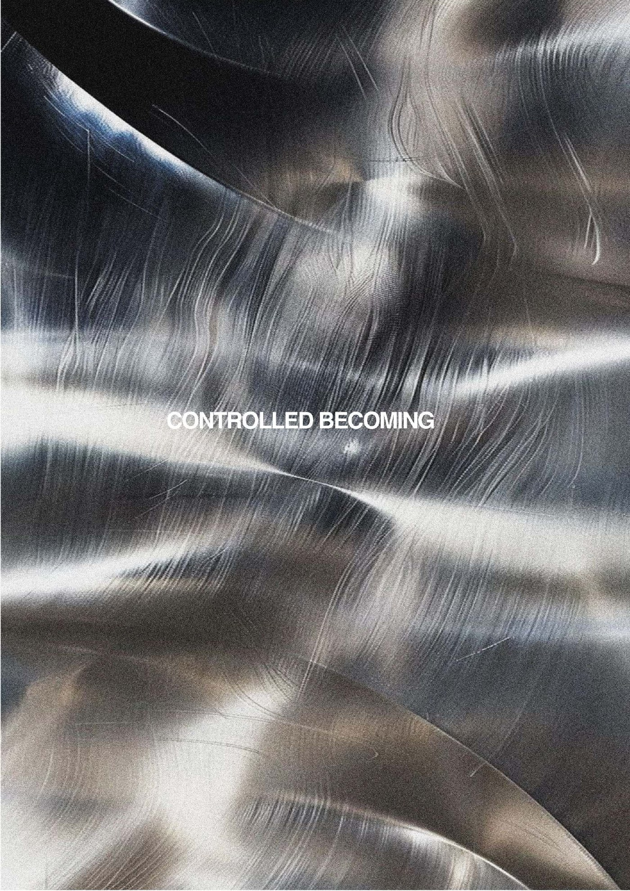

Constructed self
How posture, clothing, image and object become visible structures through which a person is read and rebuilt.
01 — Moving image / personal archive
An evolving practice around body, object, material and the ways identity is assembled, rehearsed and released.
Scroll to index
Identity index / 01—03
Rather than treating identity as fixed, this archive reads it as a field of feedback: external structures shape the self, and the self returns pressure to the world.
Hard surface.
Soft interior.
A body in
negotiation.
How posture, clothing, image and object become visible structures through which a person is read and rebuilt.
Training, movement and repetition leave traces. The body becomes both a record of change and a site of self-authorship.
What is projected outward returns as a social image. Perception becomes material, and material becomes a new point of pressure.
Selected archive / 01
A short film studies construction and organic growth in the same frame: restraint is never entirely separate from release.
Material archive / 02
Surface does not only decorate the body: it records pressure, friction, reflection and change.
Sense archive / 03
A moving study of the moment sensation reaches the surface—before it is named, controlled or made legible.
Selected archive / 02
A 16-page portfolio that gathers the project’s visual research, material thinking and design development into one downloadable edition.
